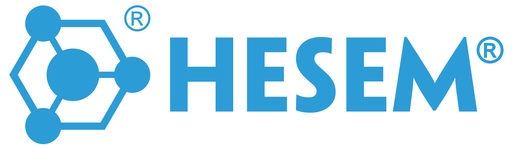

Bộ phận Production Vai trò trong chuỗi giá trị Điều hành ca production tại hiện trường: startup, manpower, output, reaction to abnormality, shift report và bàn giao ca. Document liên đới SOP-501 SOP-502 WI-202 WI-501 WI-516 ANNEX-503
Vai trò của document: JD này khóa rõ phạm vi công việc, điểm kết thúc trách nhiệm và cơ chế bàn giao của Team Leader Ca – Ca 1 / Ca 2; dùng làm input chuẩn cho tuyển dụng, OJT/training, đánh giá competence, KPI, lương thưởng và phối hợp liên phòng ban trong chuỗi RFQ → ship. JD này phải được đọc cùng ANNEX-503, ANNEX-120, ANNEX-121, ANNEX-122, ANNEX-123 và SOP/WI/ANNEX đang hiệu lực.
| Mã vị trí (Position ID) | JD-SHIFT-LEADER |
|---|---|
| Chức danh theo document | Shift Leader – Ca 1 / Ca 2 |
| Bộ phận | Production |
| Cấp vai trò | Supervisor / Lead |
| Nhóm vai trò | Production / điều hành shopfloor / kiểm soát thực thi |
| Báo cáo trực tiếp cho | CNC Workshop Manager. |
| Quản lý trực tiếp | CNC Operator và Setup Technician trong phạm vi ca được phân công. |
| Phối hợp chức năng chính | Phối hợp chức năng với QC Inspector cho mẫu đầu (first piece) / trong quá trình; với Setup Technician cho prove-out; với Maintenance khi machine fault; với Engineering khi cần hỗ trợ kỹ thuật. |
| Hệ thống / công cụ operation chính | Epicor Job Management / Labor Entry / Dispatch; traveler, setup sheet, WI; bảng quản trị theo ca và dữ liệu production hiện trường. |
| Vai trò trong chuỗi giá trị | Điều hành ca production tại hiện trường: startup, manpower, output, reaction to abnormality, shift report và bàn giao ca. |
Shift Leader là người giữ nhịp operation trong suốt ca production. Vị trí này bảo đảm ca được khởi động đúng điều kiện, bất thường được phát hiện sớm, escalated đúng tuyến và bàn giao ca kế tiếp bằng thông tin đầy đủ, có thể hành động được.
Đây là vị trí “mắt xích hiện trường” giữa kế hoạch production và thực thi tại máy; quality của ca phụ thuộc lớn vào competence kiểm soát readiness level, phản ứng bất thường và kỷ luật ghi nhận của vị trí này.
Kết quả vị trí phải tạo ra
Ranh giới vị trí: Shift Leader quản execution của một ca nhưng không thay quyền của Planner, Engineering, QA hay Customer Service; nhiệm vụ chính là bảo đảm ca chạy đúng document và escalated đúng khi có bất thường.
Trọng tâm điều hành bắt buộc
| Báo cáo trực tiếp | CNC Workshop Manager. |
|---|---|
| Nhân sự báo cáo trực tiếp | CNC Operator và Setup Technician trong phạm vi ca được phân công. |
| Tuyến phối hợp chức năng | Phối hợp chức năng với QC Inspector cho mẫu đầu / trong quá trình; với Setup Technician cho prove-out; với Maintenance khi machine fault; với Engineering khi cần hỗ trợ kỹ thuật. |
| Giao diện nội bộ chính | CNC Workshop Manager; Production Planner; QC; Engineering; Maintenance; Tool Crib; Warehouse. |
| Giao diện bên ngoài | Không áp dụng hoặc theo phân công của CNC Workshop Manager. |
| Phạm vi vị trí | Điều phối thực thi tại tuyến đầu của bộ phận Production; bảo đảm kỷ luật operation, bàn giao rõ ràng và phản ứng bất thường đúng tuyến. |
| Nhóm trách nhiệm | Nội dung trách nhiệm |
|---|---|
| Readiness level đầu ca |
|
| Giám sát thực thi trong ca |
|
| Escalation và containment |
|
| Bàn giao và kèm cặp phát triển (coaching) |
|
| Abnormality response & handover discipline |
|
| Điểm kết thúc trách nhiệm | Shift Leader quản execution của một ca nhưng không thay quyền của Planner, Engineering, QA hay Customer Service; nhiệm vụ chính là bảo đảm ca chạy đúng document và escalated đúng khi có bất thường. |
|---|---|
| Không thuộc trách nhiệm chính / phải escalated |
|
Nguyên tắc phân vai: khi công việc chạm tới quyết định vượt authority của chức danh, người giữ vị trí phải chuyển đúng người phụ trách thay vì xử lý ngoài tuyến kiểm soát.
Mọi thay đổi ảnh hưởng quality, delivery, chi phí, revision, release hoặc truy vết phải tuân theo process/record liên kết tại Mục 12.
| Đối tác / tuyến phối hợp | Nội dung bàn giao / phối hợp | RACI | Kết quả mong đợi |
|---|---|---|---|
| CNC Workshop Manager | Nhận mục tiêu ca, ưu tiên job, kế hoạch nhân lực (manpower plan) và các vấn đề cần theo dõi đặc biệt (theo dõi tiếp). |
R | Ca production bám đúng định hướng điều hành của workshop. |
| Production Planner | Nhận dispatch list; phản hồi completion, slippage, setup delay, machine down và đề xuất điều chỉnh thực tế. |
C | Planning có dữ liệu thực để cập nhật lịch. |
| Setup / Operators / Deburr / Cleaning | Phân việc, inspection readiness level đầu ca, theo dõi output và xử lý incident bước một. |
A | Mọi người trong ca biết rõ việc và điểm kiểm soát của mình. |
| QC / QA | Escalate first-off vấn đề, OOC, hold lot, inspection queue và phản ứng containment tại ca. |
C | Vấn đề quality được chặn tại nguồn thay vì trôi qua ca sau. |
| Maintenance / EHS / ca sau | Gọi hỗ trợ khi có breakdown/unsafe condition và bàn giao đầy đủ tình trạng ca lúc đổi ca. |
R | Tính liên tục và an toàn operation được duy trì qua các ca. |
Quy ước: R = đầu mối trực tiếp thực hiện/phản hồi; A = đầu mối chịu trách nhiệm cuối cùng trong tuyến phối hợp; C = cần tham vấn/bắt buộc đồng bộ trước khi tiếp tục; I = cần được thông tin để đồng bộ trạng thái.
| Output / record | Nội dung bắt buộc | Chu kỳ | Nơi lưu / nguồn |
|---|---|---|---|
| Shift readiness level record | Tình trạng người – máy – job – packet – risk của đầu ca. | Ca | Bảng ca / log hiện trường / SSOT production. |
| Shift Handover Log | Nội dung bàn giao, job tồn, job hold, bất thường chưa đóng, người phụ trách và ETA. | Ca | FRM-504, SSOT production. |
| Abnormal / escalation log | Danh sách vấn đề phát sinh trong ca và tuyến đã gọi hỗ trợ. | Ca | Log ca, log tier meeting. |
| Xác nhận attendance / OT / task assignment | Thông tin phân ca, OT và bố trí nhân sự phục vụ payroll / điều độ. | Ca / ngày | Log ca, record HR / production. |
| Shift readiness level & handover package | Báo cáo kick-off, abnormality/reaction log, bottleneck trạng thái, người phụ trách pending, FOD/line-clear confirmation và bàn giao chi tiết cho ca kế tiếp. | Mỗi ca | FRM-504; FRM-512; FRM-503; shift board; line-clear record. |
| KPI trọng yếu | Cách đo / nguồn dữ liệu | Chu kỳ theo dõi |
|---|---|---|
| Output attainment theo ca | Sản lượng / mốc việc hoàn thành so với kế hoạch ca. | Ca / tuần |
| Scrap và downtime theo ca | Scrap, dừng máy và nguyên nhân trực tiếp phát sinh trong ca. | Ca / tuần |
| Mẫu đầu & response compliance | Tỷ lệ mẫu đầu đúng process và thời gian phản ứng bất thường trong ca. | Ca / tuần |
| Handover completeness | Tỷ lệ bàn giao ca đầy đủ, không tạo lỗ hổng thông tin cho ca sau. | Ca / tháng |
| Tính toàn vẹn record trong ca | Mức độ đầy đủ của log, traveler, hold record và escalation evidence. | Ca / tuần |
| Abnormality escalation on-time | Tỷ lệ sự kiện bất thường của ca được escalated đúng thời gian và có người phụ trách/ETA rõ ngay trong ca theo log bàn giao. | Tuần / tháng |
Kiến thức chuyên môn & hệ thống
Competence hành vi / tác phong
Mô-đun competence / training cốt lõi
Mức đánh giá chi tiết, gating OJT và lộ trình phát triển áp dụng theo ma trận training (training matrix) / competency đánh giá guide hiện hành của bộ phận.
| Trình độ / chứng chỉ |
|
|---|---|
| Kinh nghiệm |
|
| Hệ thống / công cụ cần dùng | Epicor Job Management / Labor Entry / Dispatch; traveler, setup sheet, WI; bảng quản trị theo ca và dữ liệu production hiện trường. |
| Điều kiện / đặc thù công việc | Làm việc chủ yếu tại workshop/kho; có thể theo ca hoặc tăng ca theo kế hoạch; phải compliance PPE, 5S và kỷ luật ghi nhận dữ liệu hiện trường. |
| Lưu ý tuyển dụng ưu tiên | Ưu tiên ứng viên đã làm việc trong môi trường gia công chính xác/chủng loại cao (high-mix)–low-volume, quen ERP và kỷ luật document kiểm soát. |
Primary Backup: Quản lý trực tiếp hoặc senior staff/lead cùng chức năng đã hoàn tất OJT và được giao nhiệm vụ thay thế.
Secondary Backup: Nhân sự đa kỹ năng trong cùng ca/bộ phận theo bảng phân công nguồn lực và điều độ nhân sự.
Giới hạn quyền khi thay thế: Chỉ thực hiện trong phạm vi công việc thường lệ; không tự approval change, release, cam kết customer, ngoại lệ quality hay chi phí vượt authority chức danh gốc.
Nguyên tắc kích hoạt: Kích hoạt khi nghỉ phép, công tác, training, vắng mặt ngắn hạn hoặc khối lượng tăng đột biến; phải có phân công rõ bằng email, ca lệnh hoặc bảng phân nhiệm.